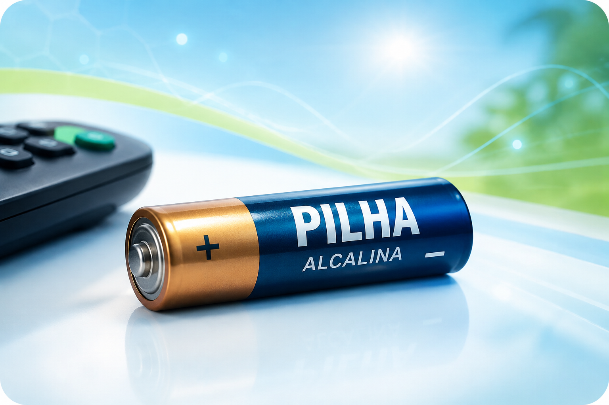

01
Pilhas
As pilhas são dispositivos que transformam energia química em energia elétrica por meio de reações de oxirredução espontâneas.
Exemplo: estão presentes em controles remotos, relógios e outros aparelhos que precisam de energia elétrica para funcionar.